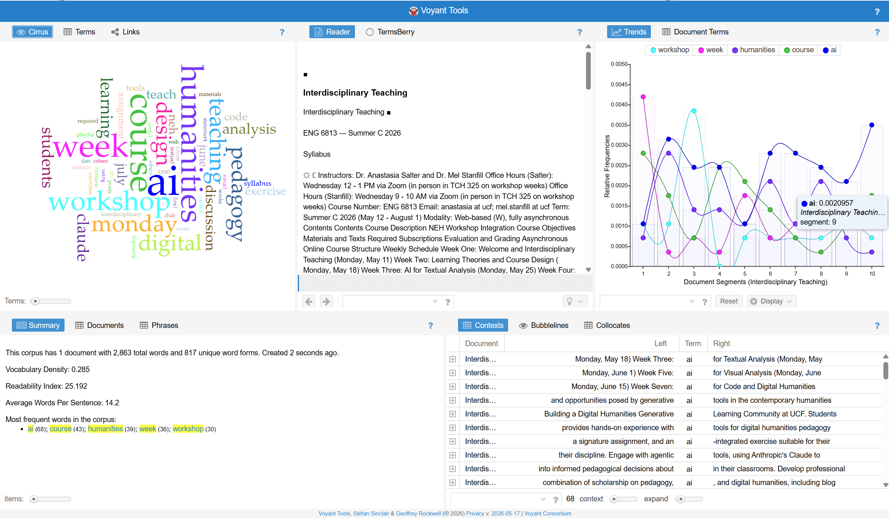
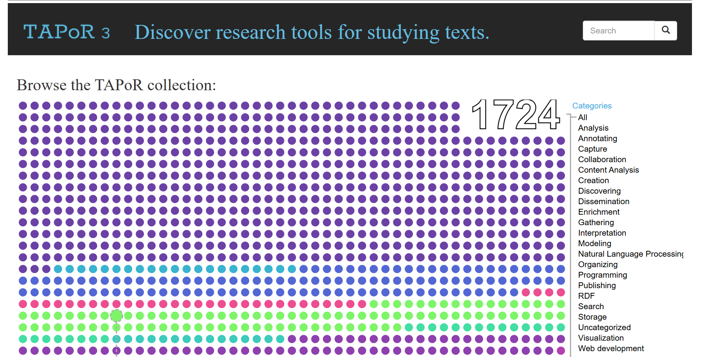
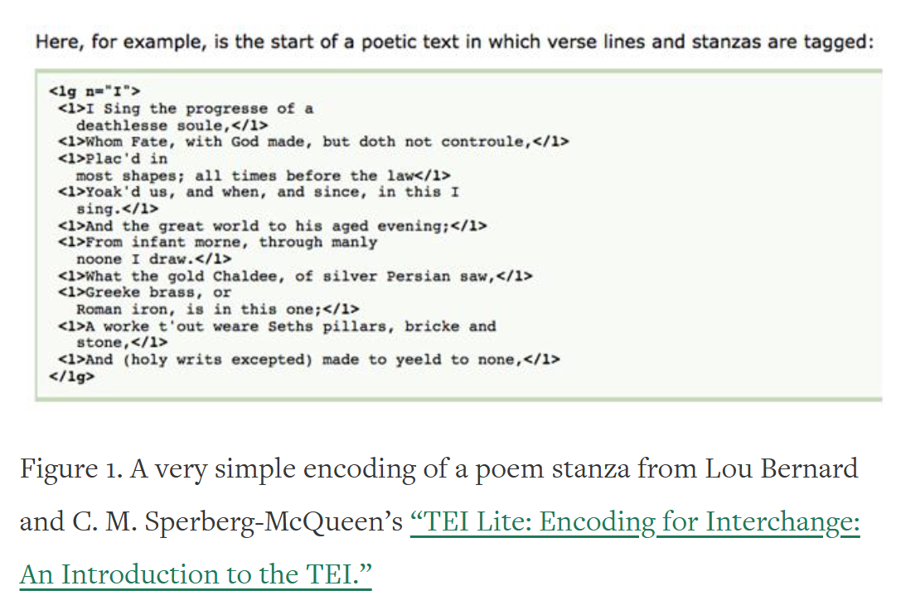
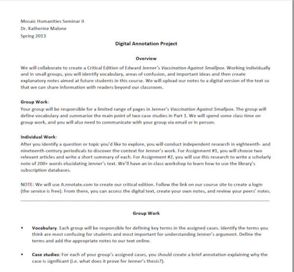
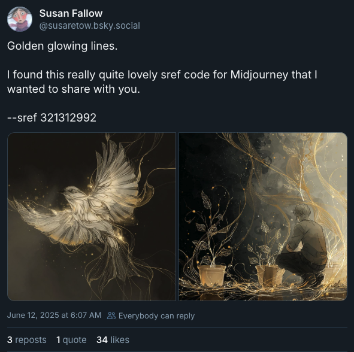
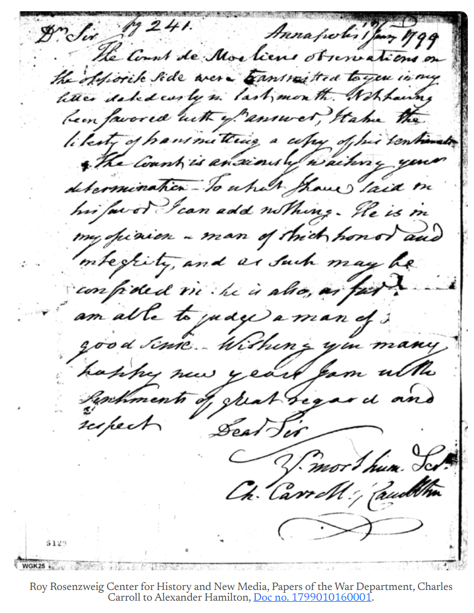
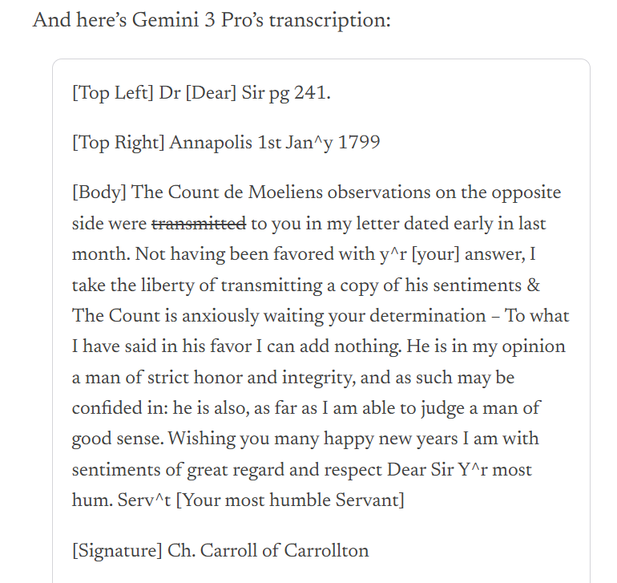

ENG 6813 · Salter & Stanfill
Natalie M. Houston, Digital Pedagogy in the Humanities
“Text analysis is fundamental to humanities scholarship.” — Houston
Houston walks through traditional DH ways of using computers to do this. From there we can ask: what does AI add — and what doesn’t it?
Houston — the work behind “reading”
“Humanists frequently— Houston
- select or collect texts in order to explore an hypothesis;
- look for patterns (of words, ideas, symbols, rhetorical or formal structures, etc.) within an individual text or within sets of texts;
- discover relations (of development, dependence, seriality, association, intention, allusion, intertextuality, etc.) between parts of texts, whole texts, or sets of texts;
- interpret the significance of these patterns, relations, and texts; and
- develop arguments for the larger significance of these interpretations.”
Houston, on close and distant reading
“In humanities research, these steps are often iterative and recursive and are rarely labeled as hypothesis, data collection, experimentation, analysis, and argument. Instead, all of these things are called reading.” — Houston
DH brings a different model that Franco Moretti has termed distant reading, as opposed to the traditional formalist and hermeneutic approach called literary close reading — though most projects use both.
Houston — what digitization opens up
“Digitization and computational tools offer new ways to explore different levels of address:— Houston
- large scale digitization changes our access both to specific texts and to new quantities of texts;
- preparation of texts to make them computationally tractable requires explicit methodological, theoretical, and hermeneutic decisions about the objects and outcomes of research;
- relational databases and full-text search expand the kinds of research queries that can be pursued;
- new media forms and new interfaces transform how we understand and perform acts of reading;
- the widespread availability of computational power and storage offer new ways of curating, displaying, and using collections of texts for human or machine analysis;
- tools for data visualization and multimodal composition offer new ways of exploring texts and building arguments.”
Not even AI specifically — just basic software
“Digital technologies can be used to expand the scale of traditional methods (and thereby transform them) or to open entirely new modes and possibilities for text analysis.” — Houston
Demystifying the labor of text analysis
“Making the labor of text preparation and cleaning evident to students demystifies the processes of text analysis and opens up conversations about textual transmission more generally.” — Croxall, via Houston

Groups learn individual DH tools, then collaborate

In Ullyot’s assignment, groups learn individual DH tools, and then groups composed of experts in different tools work together on a project.
Practical skills + interpretive choices
“TEI encoding can serve two purposes: equipping students with practical, project-based skills and exposing the interpretive choices that are at the heart of textual editing and text encoding.” — Singer, via Houston

Deepening context for the text
“Exposing students to primary research with digitized materials deepens the context for their understanding of the text.” — Malone, via Houston

Comparing multiple copies as a writing pedagogy
Walsh uses “collation, the comparing of multiple copies or witnesses of a text, for the teaching of writing.” — via Houston
This is also a way to teach revision — by seeing how other writers do it.
Argumentation, bracketed from writing
Dierkes-Thrun’s students “use multimedia digital technologies to communicate their analyses of a literary text.” — via Houston
This helps students understand argumentation while bracketing writing.
AI as general-purpose power
If the LLM is the horsepower put into a harness, Underwood frames AI itself as more like electricity or steam power: it can be used for many things, and we should do with it what we find valuable.
Underwood — another step change in culture
“Language vastly magnified our ability to coordinate patterns of collective behavior (culture), and transmit those patterns to our descendants. Writing made cultural patterns even more durable. Now generative language models (and image and sound models) represent another step change in our ability to externalize and manipulate culture.” — Underwood
Underwood — example image

Image from Underwood, “A More Interesting Upside of AI.”
Underwood — surveying language from above
“Writing allows us to take a step back from language, survey it, fine-tune it, and construct complex structures where one text argues with two others, each of which footnotes fifty others. It would be hard to imagine science without the ability writing provides to survey language from above and use it as building material.” — Underwood
Underwood — on a darker continuity
“Language models are likely to be used as ideological weapons — just as pamphlets were, after printing made them possible.” — Underwood
A Pollan-style rule for AI
“Use AI, not too much, mostly to connect with the intelligence of other human beings, not AI.” — Dan Cohen, Humane Ingenuity
Cohen on time-to-interpretation
“It would have saved me a lot of time getting to the interesting interpretive phase of my research if a computer could have converted his handwriting into machine-readable text, as it already could for typeset text through a process called optical character recognition (OCR).” — Cohen
Cohen on showing-your-work
“It is essentially a verbalization of what you’re taught to do in a paleography class: assess the overall document first, determine key features, study letter shapes and strokes across the letter to refine your understanding of the particular script, consider context and word/phrase possibilities, think about the coherence of content, grammar, and usage, identify any contractions, proper names, and other oddities, etc.” — Cohen
Cohen — using the model’s reasoning with students
“Take Gemini’s 2,000-word thinking analysis of Boole’s script. I could imagine using that with students in a paleography class to help them understand the steps in the process of deciphering a letter or manuscript.” — Cohen
Cohen — Boole’s handwriting and Gemini’s read


Cohen — the line we shouldn’t cross
Offloading these tasks “allows human beings to focus their time on the important, profound work of understanding another human being, rather than staring at a curlicue to grasp if it’s an L or an I. Could we also ask Gemini to formulate this broader understanding? Sure we could, but that’s the line that we, and our students, should resist crossing.” — Cohen
Cohen — on what counts as “the work”
“If you talk to historians now, they will admit that they can’t spare the expense and time of leafing through letters over a month in a foreign city. Most simply take photos of documents in quick trips to the archives and review them later, at home.” — Cohen
See weeks/week-03.md on Canvas for full reading links and the discussion prompt.